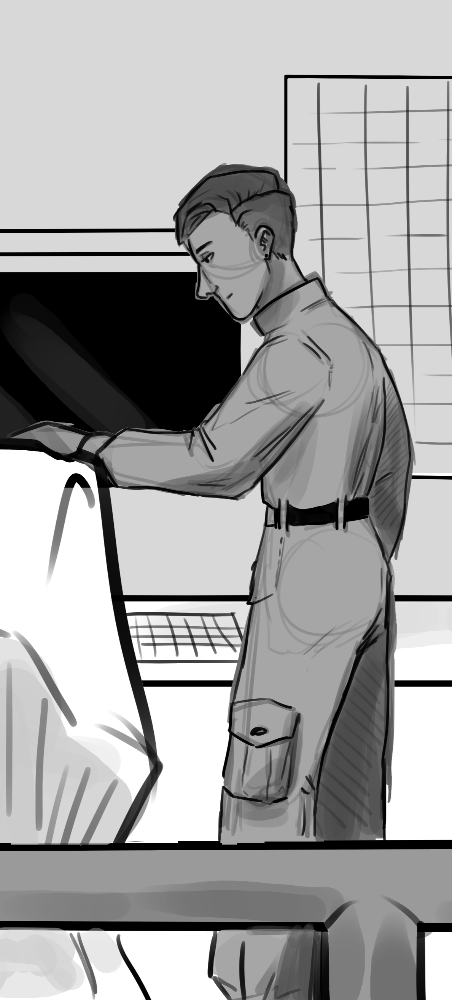
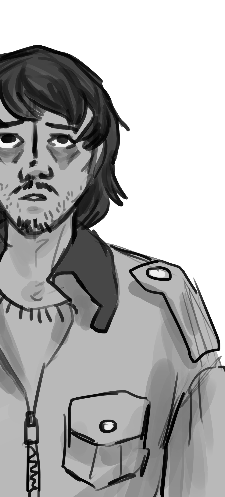
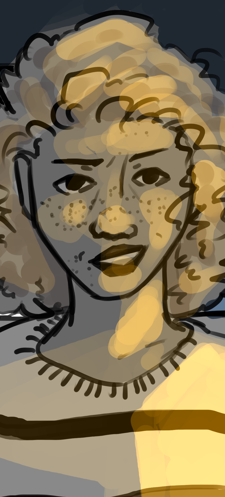

End of School-year
As part of the Audiovisual Language coursework, a short story - "End of the Schoolyear" - by Argentinian author Mariana Enríquez was adapted.
The tale, originally a story about the struggle of two teenage girls with mental health told through magical realism, was re-imagined in a sci-fi context, using space as a backdrop and an enhancer to the themes of loneliness and isolation.
Trigger warning: self-harm, mental distress, body horror and isolation.
Sinopsis
Marcelo is part of the two person crew of a space station in a future stage of outer exploration. Although both crew-mates should rely -depend even- on each other, the other crew member is at best apathetic towards him.
Eventually, an episode of mental breakdown leads him to self-harm, repeatedly hitting his head against a window, until the material bends. His crew mate stops him, and gets him medical attention. She briefly considers applying for a transfer, but something stops her. The end of the mission is approaching, and she understands first-hand the difficulties being in space for extended periods of time poses for mental health. She starts to empathize with him, as once she is alone with space she starts to see things in the void as well.
When he is sent back to work, she offers her support in good faith, and for a time, everything seems to be fine although a sense of unease remains. An oppressive feeling they cannot seem to get rid of.
One night, she finds Marcelo in the shared bathroom. He has made a cut on his face, and is smiling placidly. She gets closer and places a hand over it. Blood stains her hand as she presses her fingers against the cut and stares at it. There is an air of wonder in her gaze. She asks if he feels pain; he says he does not and steps away to wash away the blood.
She is fascinated by this.
Marcelo goes on showing signs of distress - he tears his hair out, he scratches at his wound, preventing healing, he stares out into space for long periods of time, and he faints frequently. He eventually has a more pronounced breakdown. As it turns out he has been haunted by ceaseless noise. As if though he could hear the grinding and rumbling of the universe moving around them.
She tries to confort him to little avail. She talks to him, and they hold hands, but soon she will start hearing it too.
Characters
Crew-mate |
|
|
 |
Physical Description She is a steely young woman with a severe and disciplined look about her. She is somewhat pale, with short, neat hair and brown eyes that could be warm on another face. Her uniform as very well kept and rigorously worn, as if though seeking to impress an inspector that will never come. Personality She is an emotionally stunted person, uncomfortable around emotions and who struggles to form new social connections. She is a consumed workaholic, somehow trying to get over her shortcomings in social areas through precise work and efficiency, and indeed she takes great pride in her good results, however this only alienates her further. She has a strong sense of duty, and despite everything, a deeply rooted sense of morality. Relationships The only connection outside of work we see evidence of within the short is Agustina, a childhood friend with whom she is in regular contact despite how they have grown into very different people. However, they have different priorities and outlooks on life, which often makes it difficult to understand each other even if they care deeply for the other. Her relationship with Marcelo is a complicated one, initially she is apathetic, and even disdainful, towards him. They do not mesh well in a work environment, he is disorderly and not very driven, a stark contrast to her own overbearing work ethic. It does not help that they do not speak often despite being the only people at the station, so on top of everything he finds him dull. This changes over time as the story progresses, first out of pity then out of an unhealthy idealization of his suffering. It is only at the end that she is capable of humanizing him and offer him comfort as an equal. |
Marcelo |
|
|  |
Physical Description He is a sickly young man. Pale, thin, and visibly exhausted. He has shoulder length black hair and the beginnings of a beard, though both things are unkempt. His uniform is ill-fitting, too big on him, and he leaves it open, exposing a once-white undershirt. Personality Marcelo is a private yet sensitive man. He is not deliberately lazy or careless, but rather weighted down by fatigue and mental exhaustion. This keeps him from performing well in social and working environments. The situation is only worsened when he starts to hear a constant rumbling noise and seeing an apparition that takes the form of a distended astronaut. Relationships He has no known connections, and his relationship with his crew-mate is tenuous at best. Despite being the only other person in the station they have failed to form any bond. At first, he is indifferent to her absence or company. He then grows to pity her, in the same way as he pities himself as any comfort he might draw from knowing that she is the only one that might understand him is overcome by the knowledge that understanding comes at far too high a cost. It is only when she offers him genuine human comfort and starts to see him as an equal that he too can connect with her. |
Agustina |
|
|  |
Physical Description Agustina is a woman of the same age as the crew-mate, she has a kind round face framed by curly hair. She wears nice, yet practical clothes. She has the fashion sense of a person forced into practicality as her young family starts to grow, but who still wants to express her personal style. Personality She is a practical and homely woman. She settled on a planet with her wife, with whom she has two twins. She applies herself to her work in telecommunications, and has indeed been recently promoted, but keeps a healthy work-life balance. She is genuinely content and does her best to lead a happy, uncomplicated life. She encourages the crew-mate to settle in a similar manner. Relationships Her relationship with the crew-mate is a bit strained on her end. She cares for her, but feels a measure of guilt because she knows that while to her it is now a more superficial relationship mostly based on nostalgia and sentimentalism, to the crew-mate it is one of the more intimate relationships she has. That unbalance makes her uncomfortable. |